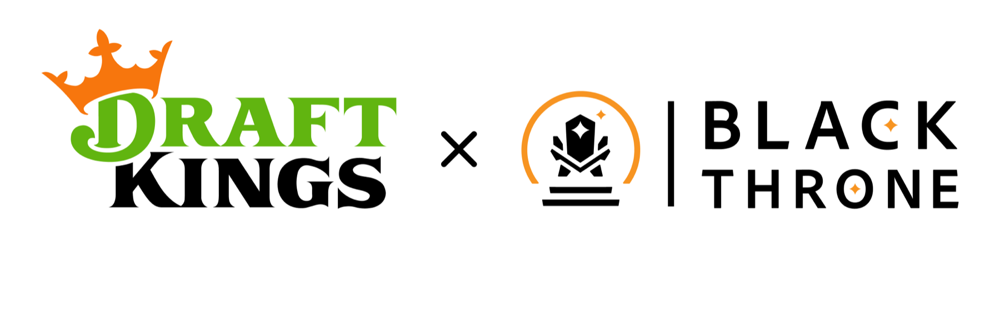
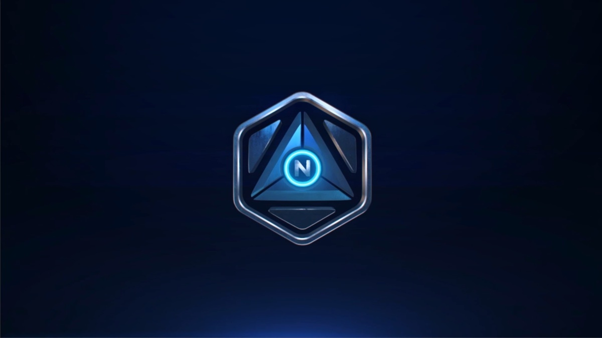

About Me
I'm a Lead UI/UX and Technical Game Designer with 12+ years of experience designing and building player experiences across PC and mobile games, VR, and interactive applications. I currently lead design for DraftKings' in-house casino games studio, Black Throne, where I've helped bring dozens of titles from concept through Unity implementation and final polish.
I specialize in turning complex game systems into clear, intuitive player experiences, bridging UX, visual design, and technical implementation from game flows and feature ideation through production. I work closely with artists, engineers, and designers to build scalable UI systems and interaction patterns.
I'm driven by the creative problem-solving that comes with making games and interactive experiences, and I'm always curious about new tools and ways to improve both the work and the process behind it.



Email: evansaccoccio@gmail.com